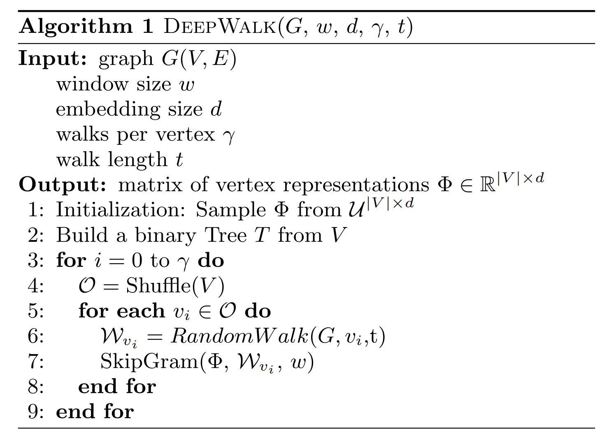
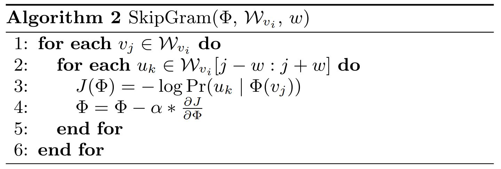
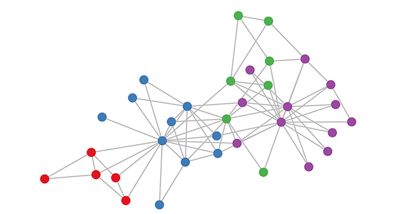
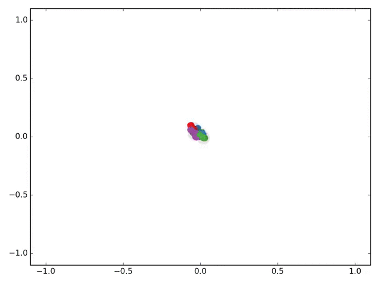
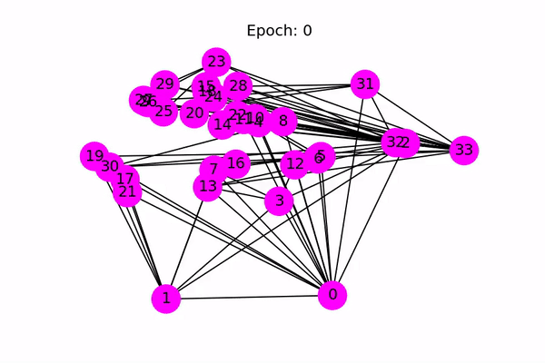

class: center, middle, title-slide count: false # Deep Learning on Graphs<br/> # an Introduction <br/><br/> .bold[Marc Lelarge] .bold[[www.dataflowr.com](https://mlelarge.github.io/dataflowr-web/)] --- # Node embedding ## Language model ### one fixed graph, no signal. Ex: community detection -- count: false # Signal processing on graphs ## Fourier analysis on graphs ### one fixed graph, various signals. Ex: classification of signals -- count: false # Inductive representations on graphs ## Graph isomorphism problem: Weisfeiler-Lehman test ### various graphs. Ex: classification of graphs --- # Node embedding ## Language model ### one fixed graph, no signal. Ex: community detection - [DeepWalk](https://arxiv.org/abs/1403.6652) - hierarchical softmax - [node2vec](https://snap.stanford.edu/node2vec/) - negative sampling --- # Language model - goal: to estimate the likelihood of a specific sequence of words appearing in a corpus. - formally: to maximize $p(w\_{n} \| w\_{1}, ... , w\_{n-1})$ where $w\_i$ are in the vocabulary $V$. -- ## skip-gram model - from the text, construct $D$ the multiset of all word and context pairs: $(w,c)$. - goal: maximize $\prod\_{(w,c)\in D} p(c\| w ; \theta)$ in the parameter $\theta$. - parametrization of the conditional probability thanks to a softmax: $$ p(c\|w; \theta) = \frac{e^{u\_c \cdot u\_w}}{\sum\_{c'\in C}e^{u\_{c'} \cdot u\_w}}, $$ where $u\_c$ and $u\_w$ are vector representations for $c$ and $w$ and $C$ is the set of all available contexts. --- # Hierarchical softmax - Assign the contexts to the leaves of a binary tree and use the parametrization: $$ p(c\|w; \theta) = \prod\_{b\in \pi(c)} \sigma(h\_b \cdot u\_w), $$ where $\pi(c)$ is the path from the root to the leaf $c$ and $\sigma$ is the sigmoid function: $$ \sigma(x) = \frac{1}{1+e^{-x}}. $$ - reduce computational complexity from $O(|C|)$ to $O(\log|C|)$. - speed up: assign shorter paths to frequent contexts using Huffman coding. --- # DeepWalk - a sentence = a random walk on the graph -- count: false  --- # Negative sampling - introduce $B = \mathbf{1}((w,c)\in D)$ with the parameterization $$ p(b=1|w,c,\theta) = \sigma(u\_w \cdot u\_c)=\frac{1}{1+e^{-u\_w \cdot u\_c}} . $$ - instead of maximizing $\prod\_{(w,c)\in D} p(c\| w ; \theta)$, we now maximize $\prod\_{(w,c)\in D} p(b=1 |c, w ; \theta)$ -- count: false Problem, this has a trivial solution! We only have positive examples! -- count: false - create negative examples $D'$ and maximize in $\theta$: $$ \sum\_{(w,c)\in D}\log \sigma(u\_w \cdot u\_c) + \sum_{(w,c)\in D'}\log \sigma(-u\_w \cdot u\_c) $$ - in [Mikolov et al.](http://papers.nips.cc/paper/5021-distributed-representations-of-words-andphrases) $D'$ is $k$ times larger than $D$, and for each $(w,c)\in D$, we construct $k$ samples $(w,c\_1) ... (w,c\_k)$ where $c\_i$ is drawn according to its empirical distribution raised to the $3/4$ power. --- # node2vec - parameterization of the skip-gram model approximated thanks to negative sampling - notion of context obtained thanks to biased random walk. .center.width-50[] --- # some results .center.width-40[] --- # some results In the multi-label classification setting, every node is assigned one or more labels from a finite set. During training phase, a certain fraction of nodes with all their labels is observed. The task is to predict the labels for the remaining nodes. .center.width-50[] --- # Signal processing on graphs ## Fourier analysis on graphs ### one fixed graph, various signals. Ex: classification of signals ## Problem: how to implement a band-pass filter on a grah? We first need to define a notion of frequency domain for graphs. This will allow us to define convolutions on graphs. --- # Recap: Fourier analysis For (smooth) $f:\mathbb{R}^d \to \mathbb{C}$, we define the Fourier transform: $$ \hat{f} (\xi) = \int f(x) e^{-2i\pi x\cdot \xi} dx, $$ so that we have $f(x) = \int \hat{f}(\xi) e^{2i\pi x\cdot \xi} d\xi$. The Fourier transform is a systematic way to decompose ''generic'' functions into a superposition of ''symmetric'' functions. Here, the ''symmetric'' fucntions are plane waves with frequency $\xi$ defined by $e^{2i\pi x\cdot \xi}$ and can be seen as the eigenfunctions of the Laplacian on $\mathbb{R}^d$: $$ f\mapsto \Delta f = \sum\_{i=1}^d\frac{\partial^2 f}{\partial x\_i^2}. $$ Indeed $\Delta e^{2i\pi x\cdot \xi} = -4\pi^2|\xi|^2 e^{2i\pi x\cdot \xi}$. The Fourier transform allows us to write an arbitrary function as a superposition of eigenfunctions of the Laplacian. This apporach works for general graphs! --- # Spectral graph theory For a graph $G=(V,E)$, we denote by $A$ its adjacency matrix and we define its Laplacian by $L=D-A$ where $D = \text{diag}(A 1)$ is the diagonal matrix of (weighted) degrees. ## Basics of $L$ We have $v^{T} L v = \sum\_{i < j} A\_{i,j}(v\_i -v\_j)^2$, $L 1=0$ and: let $\lambda\_1=0\leq \lambda\_2\leq ... \leq \lambda\_n$ be the eigenvalues of the Laplacian, then $\lambda\_2>0$ if and only if $G$ is connected. -- count: false ## Fiedler's nodal domain Theorem Let $\lambda\_1=0< \lambda\_2\leq ... \leq \lambda\_n$ be the eigenvalues of the Laplacian of a connected graph $G$ and let $(u\_1,..., u\_n)$ be the corresponding eigenvectors. For any $k\geq 2$, let $$ W\_k = \\{ i \in V: u_k(i) \geq 0 \\}. $$ Then, the graph induced by $G$ on $W\_k$ has at most $k-1$ connected components. --- # Graph Fourier transform For a connected graph $G$ with $n$ vertices, we write the spectral decomposition of $L = U\Lambda U^T$, where $$ \Lambda = \text{diag}(\lambda_1=0,\lambda_2,..., \lambda_n), \text{ and } U = (u\_1, ..., u\_n), $$ with $U^TU = U U^T = Id$. For a signal $f\in \mathbb{R}^n$, we define by $\hat{f}(\ell) = u\_{\ell}^T f$ its Fourier mode associated with frequency $\lambda\_{\ell}$. The Fourier transform of $f$ is given by $$ \hat{f} = U^T f, $$ so that we get $$ f = U\hat{f} = \sum\_{\ell} \hat{f}(\ell) u\_{\ell}. $$ --- # Filtering ##convolution = product in spectral domain .center.width-60[] .citation[slide by Andrew Zisserman] --- # Filtering on graphs For a kernel function $k:\mathbb{R}^+ \to \mathbb{R}^+$ acting on the frequency domain, we define the operator $T\_k$ acting on a given signal $f$ as: $$ \widehat{T\_k f}(\ell) = k(\lambda\_{\ell} )\hat{f}(\ell). $$ In matrix form, we write (with $\odot$ the componentwise product): $$ \widehat{T\_k f} = k(\Lambda) \odot \hat{f}. $$ -- count: false Going back in the spatial domain, we get: $$\begin{aligned} T\_k f & = U (k(\Lambda) \odot (U^T f))\\\\ &= U \text{diag}(k(\Lambda)) U^T f \\\\ & = k(L) f. \end{aligned}$$ --- # Learning a localized kernel In order to be able to learn our kernel, we will parametrize them and use polynomial kernels: $$ k\_{\theta}(L) = \sum\_{k=0}^K \theta\_k L^k, $$ where the parameter $\theta\in \mathbb{R}^K$ will be learned. -- count: false Note that if $d\_G(i,j)>K$, then we have $(L^K)\_{i,j} =0$, hence our kernel is $K$-localized. Moreover, to compute the output of our filter, we need to evaluate: $$ T\_k f = \sum\_{k=0}^K \theta\_k L^k f. $$ This requires $K$ multiplication by a (sparse) matrix $L$ with a cost $O(K\|E\|)<< n^2$. We defined a convolutional layer for graphs! --- # Polynomial approximation We are dealing with polynomial kernels. [Wavelets on graphs via spectral graph theory](https://arxiv.org/abs/0912.3848) suggests to use Chebyshev polynomial approximation. The Chebyshev polynomials $T\_k(x)$ are generated by the recurrence: $$ T\_k(x) = 2xT\_{k-1}(x) - T\_{k-2}(x), $$ with $T\_0=1$ and $T\_1=x$. They are an orthogonal basis for $L^2([-1,1],dx/\sqrt{1-x^2})$ so that $$ k(x) = c\_0/2 +\sum\_{k=1}^\infty c\_k T\_k(x), $$ with Chebyshev coefficients $$ c\_k = \frac{2}{\pi} \int\_{-1}^1 \frac{T\_k(x)k(x)}{\sqrt{1-x^2}}dx. $$ --- # Polynomial approximation .center.width-60[] Note: we shift the domain $[-1,1]$ to $[0,\lambda\_{\max}]$ using the transformation $y = \frac{\lambda\_{\max}(x+1)}{2}$. With the shifted Chebyshev polynomials $\overline{T}\_k(y) = T\_k(\frac{2y-\lambda\_{\max}}{\lambda\_{\max}})$, we parametrize the kernel by: $$ k\_\theta(y) = \theta\_0 +\sum\_{k=1}^\infty \theta\_k \overline{T}\_k(y). $$ .citation[source [Fast Eigenspace Approximation using Random Signals](https://arxiv.org/abs/1611.00938)] --- # First application with $K=1$ .center[  ] For $K=1$, the convolutional layer is simply linear with respect to $L$. The two-layer forward model is (with $\tilde{L}$ a renormalized version of the Laplacian): $$ Z = f(X,A) = \text{softmax}(\tilde{L}\text{ ReLU}(\tilde{L}XW^{0})W^{1}), $$ with $\tilde{L}\_{i,j} = 1/\sqrt{(d\_i+1)(d\_j+1)}$ for $i\sim j$ or $i=j$, and zero otherwise. .citation[source [Semi-Supervised Classification with Graph Convolutional Networks](https://arxiv.org/abs/1609.02907)] --- # First application with $K=1$ .center[  ] .citation[source [Semi-Supervised Classification with Graph Convolutional Networks](https://arxiv.org/abs/1609.02907)] --- # Convolutional neural networks on graphs The paper [CNN on graphs with fast localized spectral filtering](https://arxiv.org/abs/1606.09375) introduces an additional pooling layer: .center.width-60[] -- count: false ### Performances on MNIST Underlying graph: 8-NN graph of the 2D grid of size $28\times 28$ with weight $W\_{i,j} = e^{-\||z\_i-z\_j\||^2/\sigma^2}$, where $z\_i$ is the 2D coordinate of pixel $i$. .center.width-60[] --- # Inductive representations on graphs ## Graph isomorphism problem: Weisfeiler-Lehman test ### various graphs. Ex: classification of graphs -- count: false Result of seeing an image where nodes are pixels and where we replace the grid by the complete graph: .center.width-80[] --- # Invariant and equivariant linear operators For an order-$k$ tensor $T\in \mathbb{R}^{n^k}$, we define for $\sigma\in \mathcal{S}\_n$: $$ (\sigma \star T)\_{\sigma(i\_1),...,\sigma(i\_k)} = T\_{i\_1,...,i\_k}. $$ A graph $G$ can be seen as a $2$-tensor. Two graphs $G\_1, G\_2$ are said isomorphic if there is a permutation $\sigma$ such that $G\_1=\sigma\star G\_2$. -- count: false A function $f:\mathbb{R}^{n^k}\to\mathbb{R}$ is said to be invariant if $f(\sigma \star T) = f(T)$ for every permutation $\sigma$. A function $f:\mathbb{R}^{n^k}\to\mathbb{R^{n^\ell}}$ is said to be equivariant if $f(\sigma \star T) = \sigma\star f(T)$. -- count: false There is a basis of $b(k+\ell)$ possible equivariant linear operators $f:\mathbb{R}^{n^k}\to\mathbb{R^{n^\ell}}$. The dimension of this space does not depend on the number of nodes $n$. This allows applying the same network on graphs of different sizes! .citation[[Invariant and Equivariant Graph Networks](https://arxiv.org/abs/1812.09902)] --- # Invariant graph neural networks A linear invariant function $f:\mathbb{R}^{n}\to\mathbb{R}$ is of the form $f(x) = \alpha 1^Tx$. A linear invariant function $f:\mathbb{R}^{n}\to\mathbb{R^n}$ is of the form $f(x) = [\alpha Id + \beta(11^T-Id)]x$. A linear invariant function $f:\mathbb{R}^{n\times n}\to\mathbb{R}$ is of the form -- count: false $$ f(A) = \alpha\sum\_{ i =\not j } A\_{i,j} + \beta \sum\_{i=j}A\_{i,j}. $$ In order to get more expressive layer, we need to use tensor of higher order. [On the universality of invariant networks](https://arxiv.org/abs/1901.09342) shows that the minimal required order is $k\geq n^2$ in order to be able to approximate any invariant function. This is of little practical value... we need another approach! --- # The Weisfeiler-Lehman graph isomorphism test .center.width-70[] --- # Graph Neural Networks - start with initial node features $h_v^{(0)}$ for $v\in G$. - after $k$ iterations, a node's representation captures the structural information within $k$-hop network neighborhood by: $$ h_v^{(k)} = \phi\left(h_v^{(k-1)}, f \left( h_u^{(k-1)}, u\in\mathcal{N}(v) \right) \right), $$ where: - $f$ is called the (local) aggregate function and is **permutation invariant** - $\phi$ is the combine funtion. --- # Representations used for prediction - For node classification, the node representationh $h_v^{(K)}$ of the final iteration is used for prediction. - For graph classification, we add a $\text{READOUT}$ function such that prediction is made thanks to $$ h_G = \text{READOUT}\left( h_v^{(K)}, v\in G\right), $$ where $\text{READOUT}$ is **permutation invariant** -- count: false ### Property: 2 isomorphic graphs will have the same representation. --- # Learning procedure The functions $\phi$, $f$ and $\text{READOUT}$ are parametrized by neural networks (with the constraint of being permutation invariant for $f$ and $\text{READOUT}$). For a given task, a loss is defined and the parameters of the functions $\phi$, $f$ and $\text{READOUT}$ are learned with a standard stochastic gradient procedure. -- count: false ### Example: Graph Convolutional Networks (seen previously) $$ h_v^{(k)} = \text{ReLU}\left( W \cdot \text{MEAN}\left( h_u^{(k-1)}, u\in\mathcal{N}(v)\cup {v}\right)\right) $$ -- count: false ### Example: Graph Isomorphism Network (GIN) $$ h\_v^{(k)} = \text{MLP}^{(k)}\left( (1+\epsilon^{(k)}) h\_v^{(k-1)} + \sum\_{u\in\mathcal{N}(v)} h_u^{(k-1)}\right) $$ .citation[ [How Powerful are Graph Neural Networks?](https://arxiv.org/abs/1810.00826)] --- # Results .center.width-80[] --- ## Implementation with [DGL](https://docs.dgl.ai/en/latest/index.html) .center.width-20[] You can create a DGL graph from networkx: ``` import networkx as nx import dgl g_nx = nx.petersen_graph() g_dgl = dgl.DGLGraph(g_nx) import torch g.ndata['h'] = torch.randn(10,3) # assign one 3D vector to each node ``` --- ## Convolutional layer ``` import torch.nn as nn # Define the message & reduce function def gcn_message(edges): # The argument is a batch of edges. # This computes a (batch of) message called 'msg' using the source node's feature 'h'. return {'msg' : edges.src['h']} def gcn_reduce(nodes): # The argument is a batch of nodes. # This computes the new 'h' features by summing received 'msg' in each node's mailbox. return {'h' : torch.sum(nodes.mailbox['msg'], dim=1)} # Define the GCNLayer module class GCNLayer(nn.Module): def __init__(self, in_feats, out_feats): super(GCNLayer, self).__init__() self.linear = nn.Linear(in_feats, out_feats) def forward(self, g, inputs): # g is the graph and the inputs is the input node features # first set the node features g.ndata['h'] = inputs # trigger message passing on all edges g.send(g.edges(), gcn_message) # trigger aggregation at all nodes g.recv(g.nodes(), gcn_reduce) # get the result node features h = g.ndata.pop('h') # perform linear transformation return self.linear(h) ``` --- ## A 2-layer Graph Convolutional Network for node classification ``` # Define a 2-layer GCN model class GCN(nn.Module): def __init__(self, in_feats, hidden_size, num_classes): super(GCN, self).__init__() self.gcn1 = GCNLayer(in_feats, hidden_size) self.gcn2 = GCNLayer(hidden_size, num_classes) def forward(self, g, inputs): h = self.gcn1(g, inputs) h = torch.relu(h) h = self.gcn2(g, h) return h # The first layer transforms input features of size of 34 to a hidden size of 5. # The second layer transforms the hidden layer and produces output features of # size 2, corresponding to the two groups. net = GCN(34, 5, 2) ``` --- ## Semi-supervised learning for the karate club .center.width-70[] --- ## Semi-supervised learning for the karate club .center.width-20[] ``` inputs = torch.eye(34) # one-hot vectors to initialize the node features labeled_nodes = torch.tensor([0, 33]) # only the instructor and the president nodes are labeled labels = torch.tensor([0, 1]) # their labels are different optimizer = torch.optim.Adam(net.parameters(), lr=0.01) all_logits = [] for epoch in range(30): logits = net(G, inputs) logp = F.log_softmax(logits, 1) # we only compute loss for labeled nodes loss = F.nll_loss(logp[labeled_nodes], labels) optimizer.zero_grad() loss.backward() optimizer.step() print('Epoch %d | Loss: %.4f' % (epoch, loss.item())) ``` --- ## Results .center[  ] .citation[source: Tutorial [DGL at a Glance](https://docs.dgl.ai/en/latest/tutorials/basics/1_first.html)] --- # Node embedding ## Language model ### one fixed graph, no signal. Ex: community detection # Signal processing on graphs ## Fourier analysis on graphs ### one fixed graph, various signals. Ex: classification of signals # Inductive representations on graphs ## Graph isomorphism problem: Weisfeiler-Lehman test ### various graphs. Ex: classification of graphs --- class: end-slide, center count: false The end.